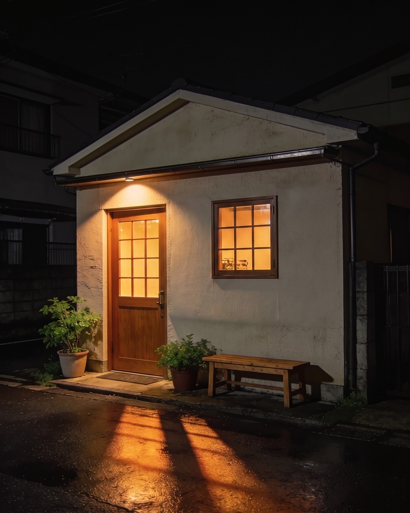
自家焙煎
看板は出していません。
見つけてくださった方だけの店で構わないと思っています。
01この店のこと
珈琲は一杯ずつ、湯を細く落として淹れています。同じ豆でも、その日の湿気で味が変わります。少しずつ淹れ方を直しながら、毎日おなじことを続けています。
開店したときから、ほとんど模様替えをしていません。席は多くありません。そのぶん、一杯ずつ丁寧に淹れられます。
本を読みに来てくださる方が多い店です。長居していただいて構いません。読みかけの本を置いていかれる方がいて、次にいらしたときに続きをお渡ししています。
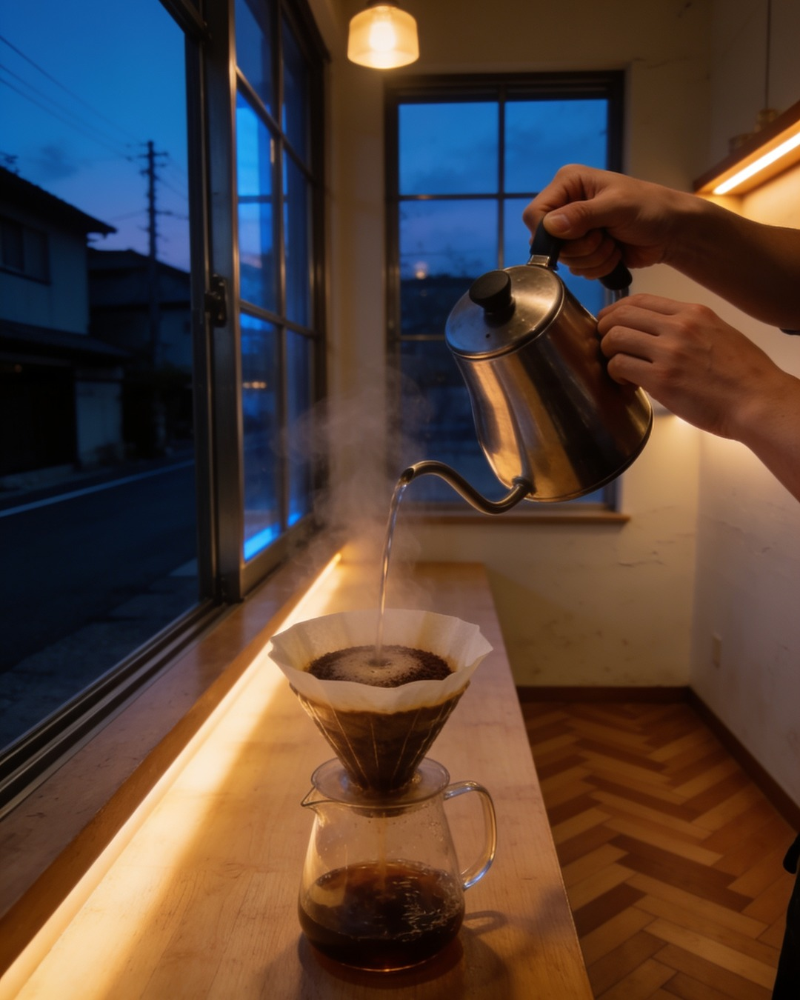
道具を並べるところから、一日が始まります。
とまり木
この時間で、気持ちが整います。
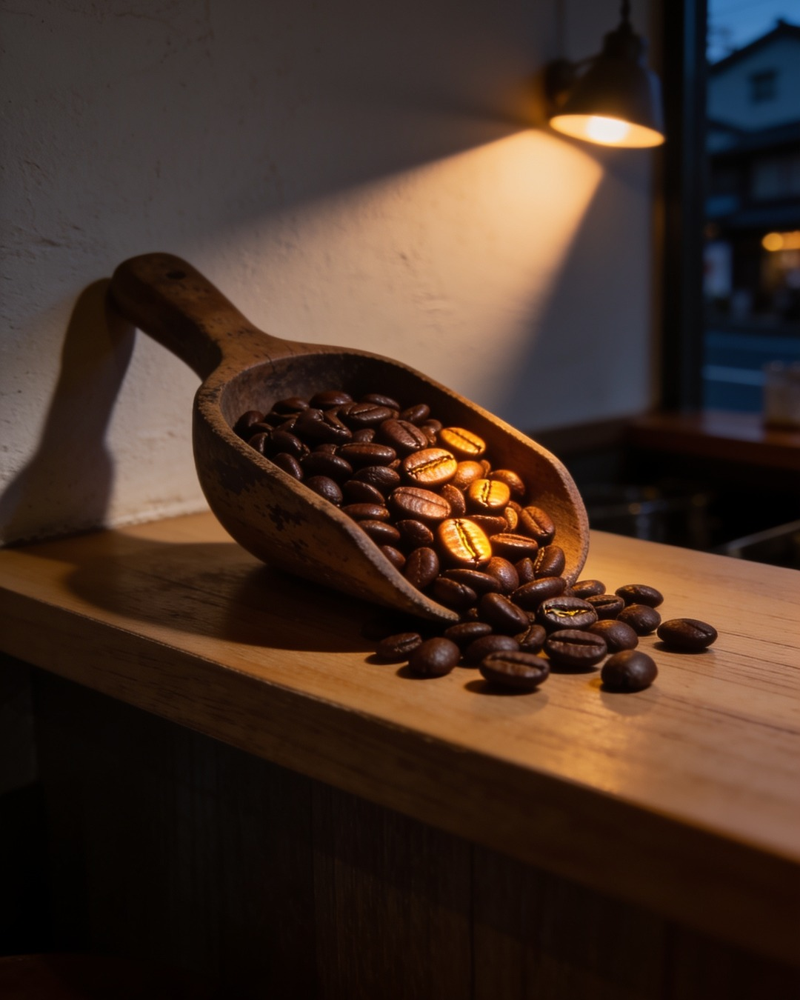
03珈琲のこと
豆は数種類だけ置いています。少量ずつ焼いているので、買ってすぐの香りが本当においしいです。迷われたら好みを聞かせてください。
挽き目はその日の豆に合わせて変えています。お持ち帰りの豆も、その場で挽きます。
04店のようす
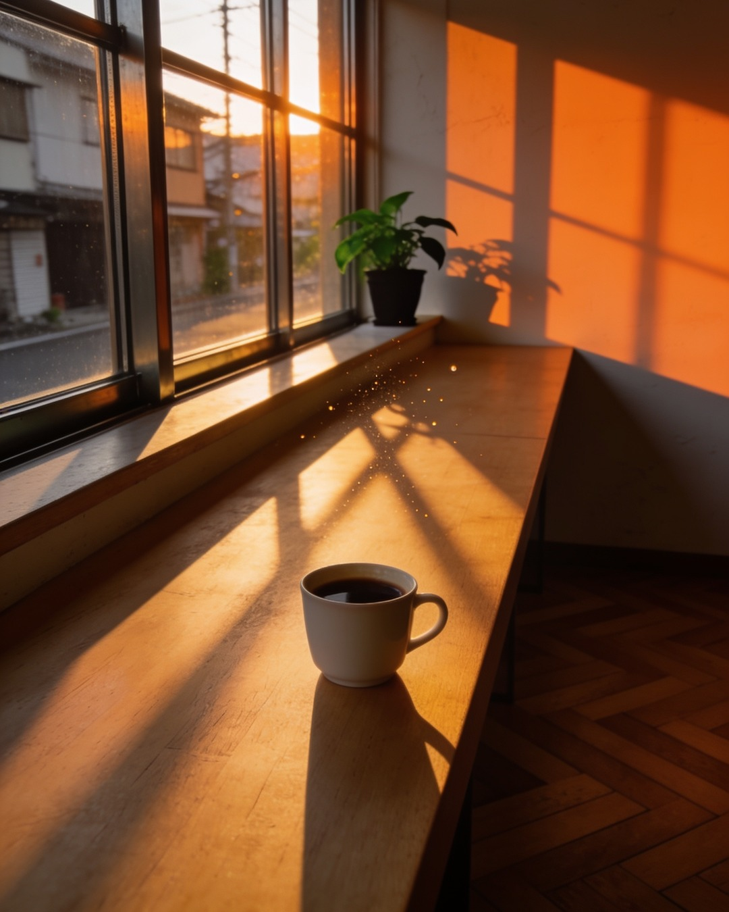
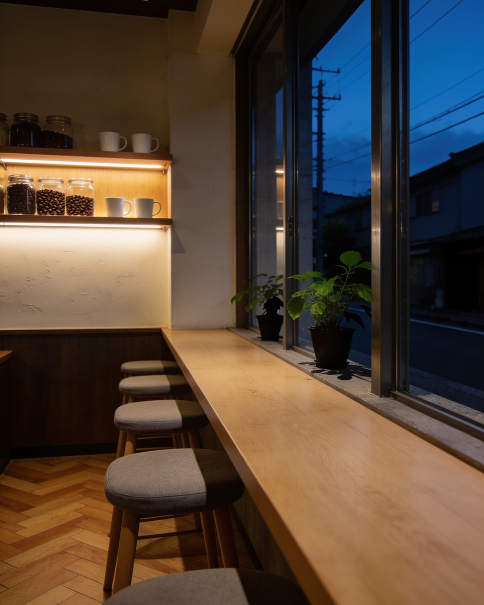
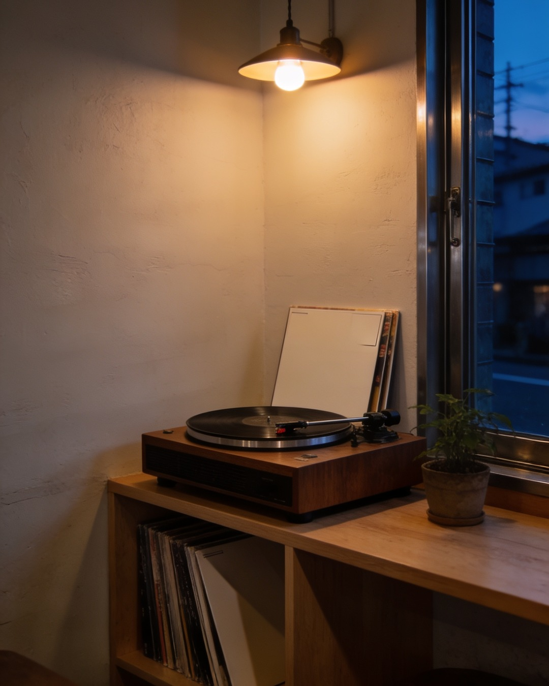
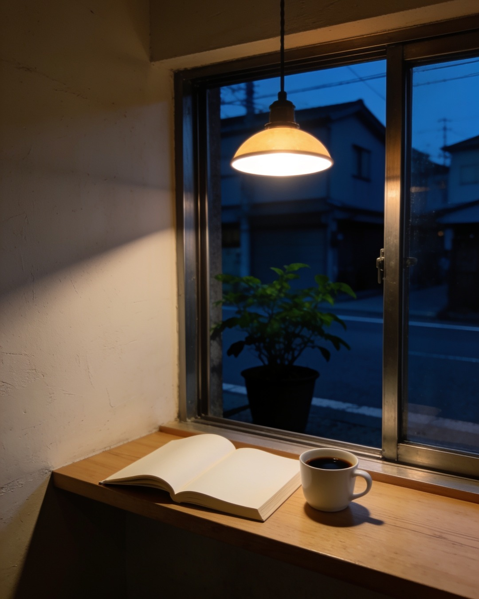
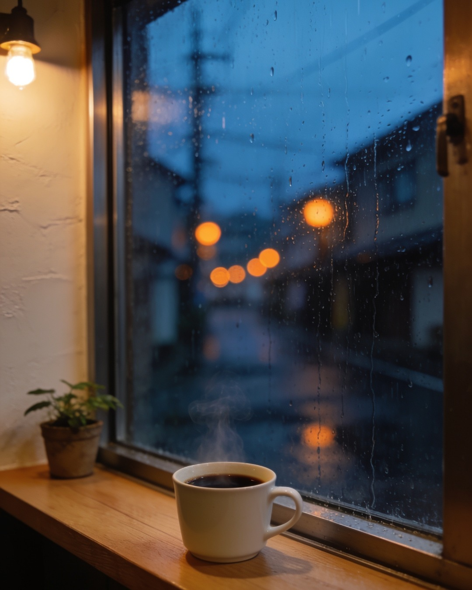
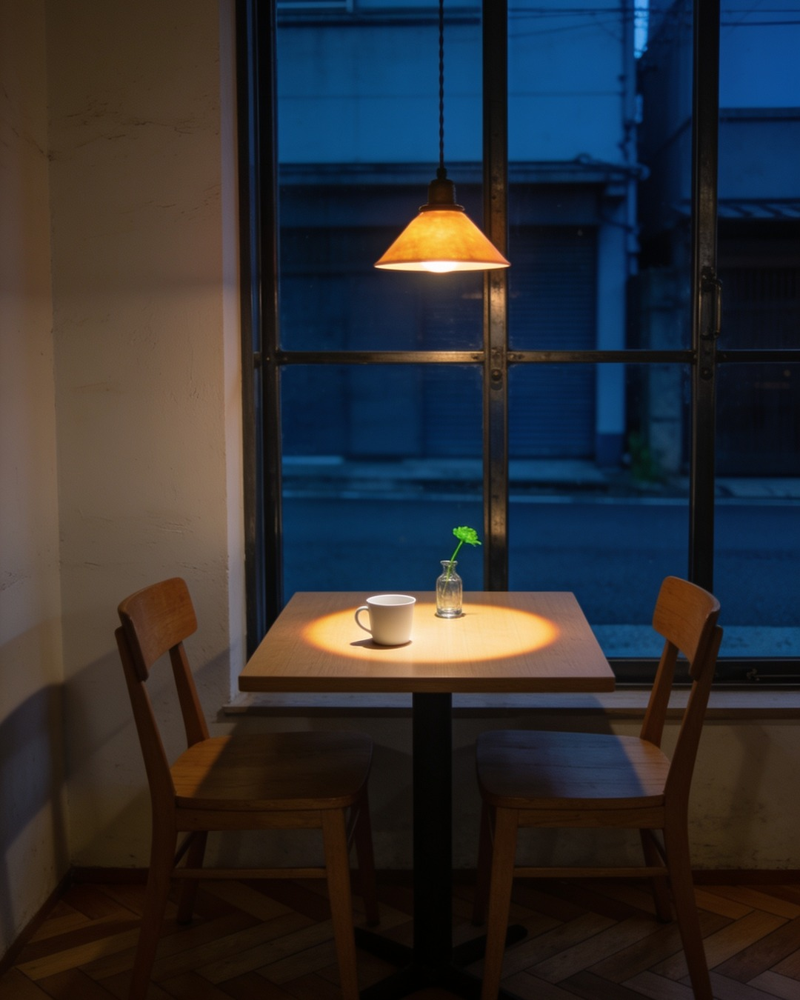
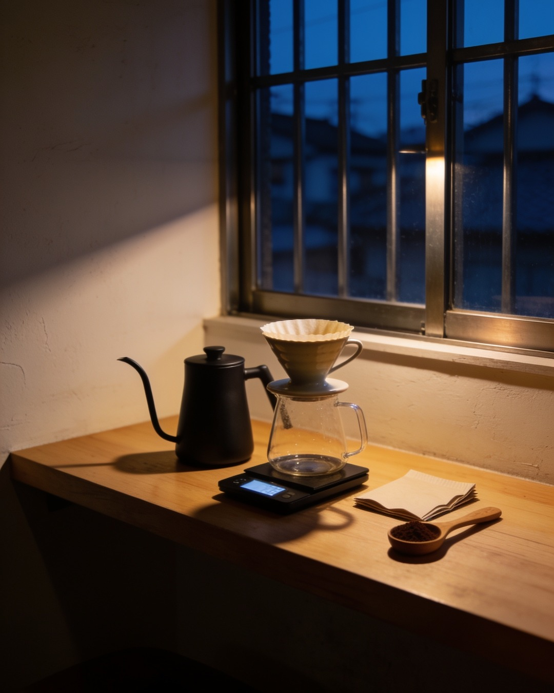
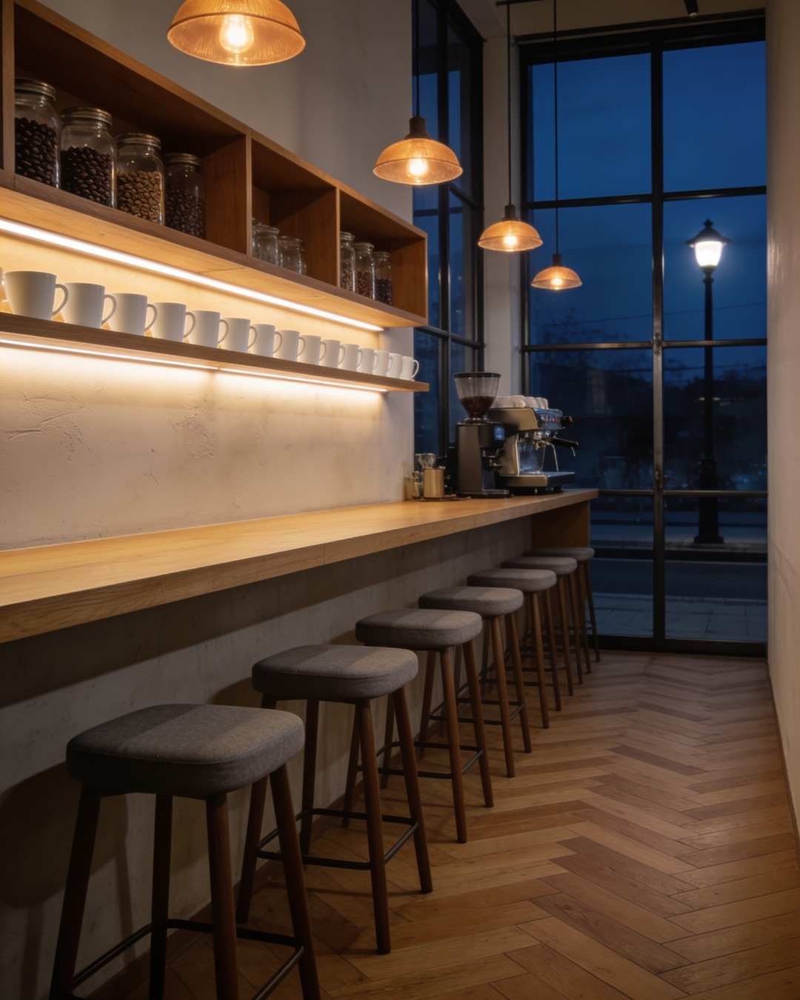
05ご案内
| 営業時間 | 8:00 — 17:00 |
|---|---|
| 定休日 | 水曜日、第3木曜日 |
| 席 | カウンター席、テーブル席（二人がけ） |
| お支払い | 現金 |
| お持ち帰り | コーヒー豆（挽き売りもいたします） |
看板は出していません。日々のことはInstagramに書いています。
Instagram を見る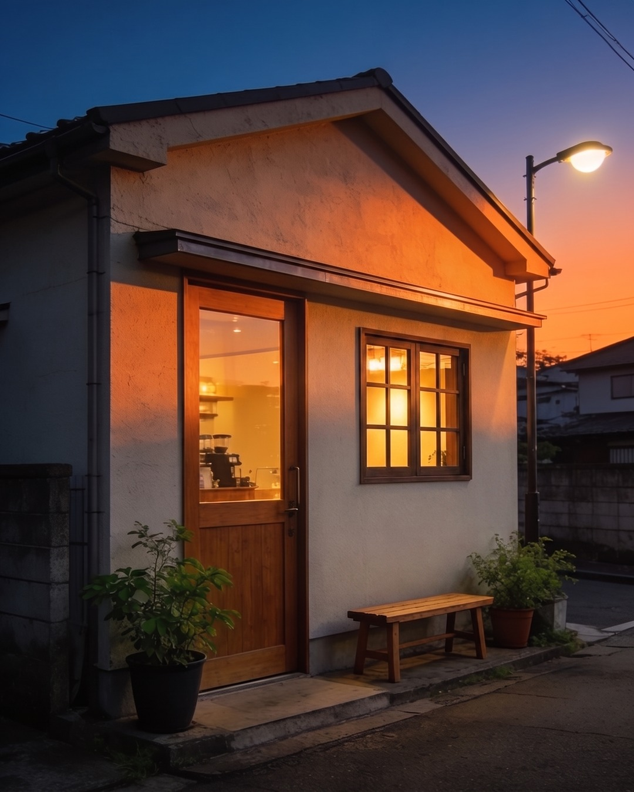
喫茶とまり木は、架空の喫茶店です。実在するお店ではないため、訪ねていくことはできません。楽しみにしてくださった方には、申し訳ありません。
この店は、Instagram運用の設計を検証するために NexusGuild が本気で営んでいます。どんな投稿が保存されるのか、どんな言葉でプロフィールを見に来てもらえるのか。実在のお店をお預かりする前に、まず自分たちの店で確かめています。
ここで分かったことは、そのまま実在のお店の運用に使っています。
NexusGuild のご案内